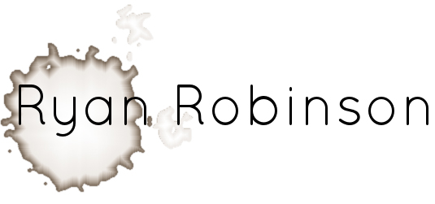

Who I am:
Full-stack developer seeking to use my technical expertise to produce creative, visually smart, and functional websites and applications. I am highly motivated, totally self-taught, hungry to learn, and very enthusiastic about developing web apps.
What I can do:
- HTML + CSS
- Bootstrap 2 + Bootstrap 3
- Javascript, jQuery, & KnockoutJS
- Node.js with MongoDB, Redis, ExpressJS & MySQL
- Some MySQL Administration and schema design
- CSS preprocessors (LESS & SASS)
- UI/UX Design
- AWS: RDS, s3, EC2, & SQS
- Amazon EC2 w/ Ubuntu Server
- Git Version Control
- Grunt Automation
- NGinX & LAMP
- Adobe Creative Suite
- Text Editor of Choice: Sublime Text
What I’ve done (for fun):
Wato CMS | 2013 | HTML, CSS, & NodeJS Github
Wato is a NodeJS blog tool and is my first first packaged product (downloadable, installable, and run locally). Wato uses the Express framework as its MVC backend and MongoDB as its database. After installing the application a user can write articles, manage site organization through article categories, and manage users with differing permissions levels. Demo
FantasySlackr | 2013 | NodeJS, MongoDB, OAuth1.0 Github
FantasySlackr is a web-service that automates the management of user's Yahoo Fantasy Sports teams. Using the Yahoo API, FantasySlackr is able to read, store, and manipulate a user's lineups and transactions. This project presented numerous challenges including programming complex game logic and streamlining signed OAuth API calls. Deployed using Amazon EC2 with NGinX
TinyBudget | 2013 | HTML, CSS, KnockoutJS, Bootstrap, NodeJS, Redis Github
Two parts: Server & Client. Server stores user's expense items in Redis and serves them up in month blocks in JSON format. Server accepts a handful of API calls. Client application handles creating new users, login/logout, and working in the application itself. Items are store in a KnockoutJS observable array and filtered down by month and category. Deployed using Amazon EC2 with NGinX. Demo & Tour
What I’ve done (for a paycheck):
Amazon (via The Creative Group) | November 2013 to present | SDE
My duties at Amazon range widely but generally fall into three categories. First, work with UX designers to create static HTML/CSS interfaces for applications being developed by other teams. Second, again working with UX designers, create dynamic, data-driven "widgets" that are used by Amazon's merchandisers to drive sales and help millions of customers find thier products. Third, create NodeJS based applications for various internal uses, the most advanced of which is a SOA based metrics application that leverages Amazon's vast amount of data to track usage and effectiveness of our widgets.
Deloitte Digital (via The Creative Group) | October 2013 | Web Development
Develop the redesign for delottedigital.com that makes extensive use of HTML5 video. The final product needed to be completely responsive and work on all popular devices. Can be viewed here
Cascade Design (via The Creative Group) | August 2013 | Web Development
Using jQuery, HTML, & CSS, developed a single product page showcasing one of Cascade Design's product line. Viewable here
Nordstrom (via The Creative Group) | July 2013 | Web Development
Assist with development of product pages and templates to comply with Nordstrom's high standards for cross-browser consistency and accessibility. Required understanding of HTML, CSS, Javascript, Creative Suite.
Cobalt ADP (via The Creative Group) | October 2012 | Web Production
Using current web technologies, built and maintained Cobalt’s dealer websites and assist with converting them from their current static platform to Cobalt’s HTML5 compliant flex platform. Required understanding of HTML, CSS, Javascript, Adobe Flash and Creative Suite.
Costco Wholesale, Inc. (via The Creative Group) | Sept 2012 | Web Production
This project required working with a large web production team to create and maintain a large number of web pages for Costco’s e-commerce website. Tools used included IBM Websphere CMS and HTML
What I’m Looking For:
- An environment which encourages curiosity
- An position that requires the best of my abilities and effort
- Tasks that constantly challenge me to improve and innovate
- Daily use of the words Ajax, JSON, API
- Heavy use of Chrome Inspector
- Smart use of Automation
What I Run Away From:
- Monotony†
My Education:
- Western Washington University - Graduation March 2012
English Literature Emphasis - 3.4 GPA
Studies included: analog circuits, logic, and technical writing
What I Aspire To Do/Be:
- Complete UW PCE's Ruby and Web Solutions
- †that’s what computers were built to alleviate, not cause. If computers are causing monotony, you’re not using them right